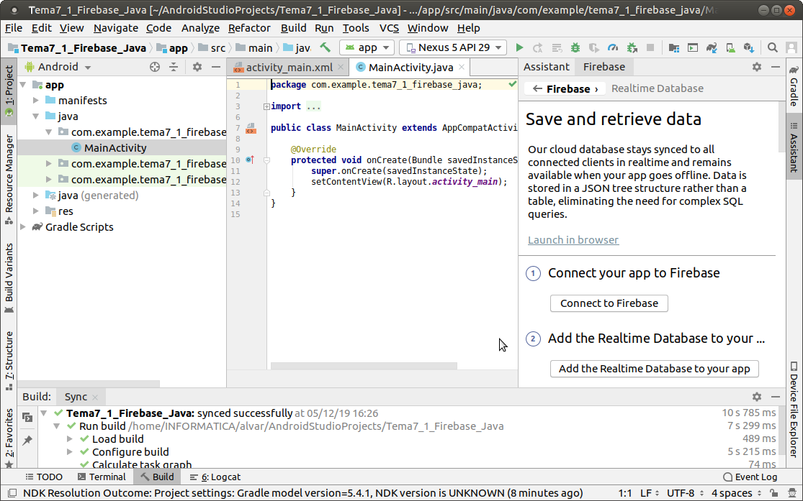
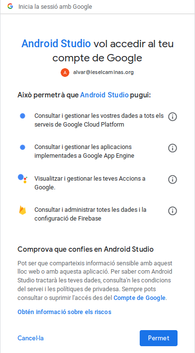
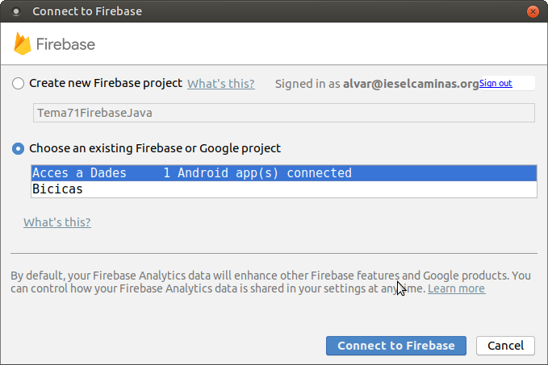
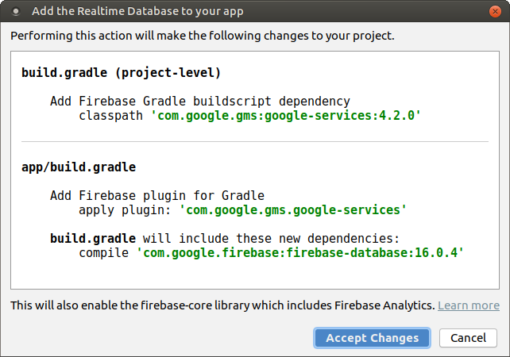
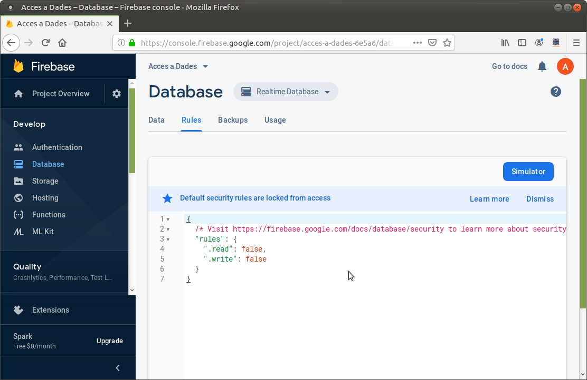
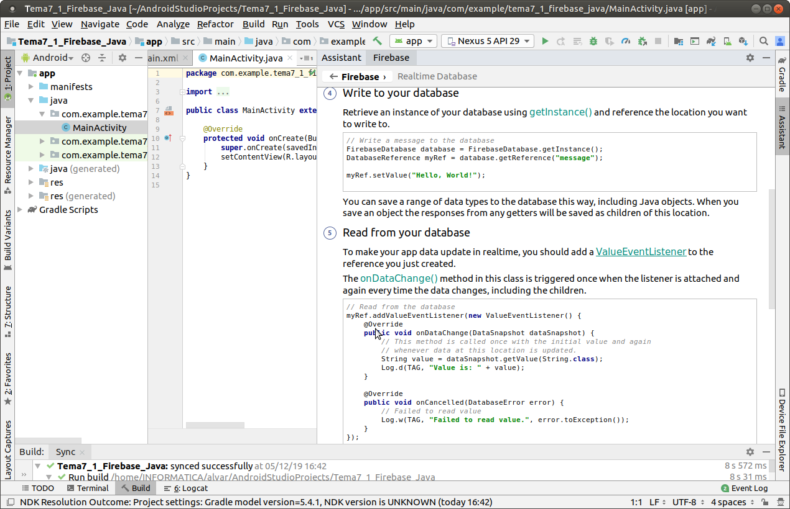

2.2.3.1 RD-Android: Connexió des d'Android
L'accés és extraordinàriament fàcil gràcies als assistents que ens proporciona el propi Android Studio.
Per a poder provar-lo ens crearem un projecte d'Android anomenat per exemple Tema7_1_FirebaseRD_Java i/o Tema7_1_FirebaseRD_Kotlin
Al final de tot teniu un vídeo que repassa tots els passos per a poder connectar des de la nostra aplicació d'Android. A continuació els repassem i expliquem un a un. Són els que ens marca l'assistent, que haurem d'invocar sobre el nostre projecte ja creat, i que es crida des de Tools --> Firebase --> Realtime Database :
Observeu que quasi quasi tot és idèntic, encara que utilitzem Java o Kotlin. Només farem la diferenciació en l'exemple, on estarà ja tot el codi.
Connectar l'aplicació a Firebase

En apretar el botó de Connect to Firebase, si no estàvem connectats amb el compte de Google al Firebase se'ns obrirà finestra d'un navegador per a connectar. Podria donar-se el cas que ens diguera que Android Studio vol accedir a les dades de la Base de Dades. Òbviament ho haurem de permetre:

Una vegada autenticats en Firebase, des de l'entorn d'Android Studio ens ofereix la possibilitat de crear una aplicació nova (una Base de Dades nova) o utilitzar alguna de les que ja tenim. Utilitzarem la que ens ha servit de prova fins el moment:

Quan haja connectat substituirà el botó Connect to Firebase, per una etiqueta que dirà connected, en verd.
Afegir la Base de Dades a la nostra aplicació
En aquest segon pas, quan apretem el botó Add the Realtime Database in your app, ens dirà els canvis que farà per a incorporar les coses necessàries per a poder connectar.

Com veieu es tracta d'incorporar les llibreries necessàries de Firebase. En el vídeo del final es mostren imatges amb les dades incorporades.
Igual que abans, substituirà el botó Add the Realtime Database in your app, per una etiqueta que dirà Dependencies set up correctly, en verd. És una bona guia per saber en quin punt estem.
Permetre l'accés als usuaris, si es precís canviant les regles d'accés a la Base de Dades
En versions anteriors de Firebase, per defecte les Bases de Dades (aplicacions) de Firebase estaven configurades per a que es connecten únicament usuaris autenticats. Això serà molt convenient en el futur, quan des del mòdul PMDM proveu l'autenticació d'usuaris. Però en l'última versió ens pregunta quan fem el primer accés si volem que es connecten usuaris autenticats, o si permetem que es connecte tot el món.
Sempre ho podrem modificar, i això es fa des de la Consola de Firebase de la Base de Dades, en la pestanya Rules. En el mòdul d'Accés a Dades permetrem l'accés a tot el món posant les dues propietats a true. Sabreu que ho heu posat de forma correcta quan els dos trues us apareguen en roig

Copiar les sentències per a escriure i per a llegir (millor dit per a detectar els canvis en temps real)
Ens diu un exemple de les sentències a copiar per a poder guardar una informació a la Base de Dades i també per a detectar un canvi en la Base de Dades i poder obtenir el nou valor. Encara que tinguem un projecte en Kotlin, les sentències d'exemple seran de Java, però que en copiar-les les traduiria a Kotlin. No fem diferenciació per tant entre Java i Kotlin en aquest moment.

Exemple
A partir de l'anterior, anem a modificar-lo lleugerament, col·locant un EditText on es puga escriure i enviar una informació a la Base de Dades, o quan es modifica en la Base de Dades poder reflectir-lo.
Primer, a banda de connectar, haurem de "registrar" el que volem tant modificar com detectar que s'ha modificat. En aquest cas només serà una parella clau-valor, que anomenarem refA1, que es referirà a la parella clau-valor a1
- Per a enviar utilitzem un botó, i senzillament quan s'aprete s'envia la informació: mofdifiquem el valor de refA1
- Per a rebre la informació hem "d'escoltar" si hi ha canvis, muntant un addValueEventListener sobre refA1
Aquest seria el ActivityMain.xml
<?xml version="1.0" encoding="utf-8"?>
<androidx.constraintlayout.widget.ConstraintLayout xmlns:android="http://schemas.android.com/apk/res/android"
xmlns:app="http://schemas.android.com/apk/res-auto"
xmlns:tools="http://schemas.android.com/tools"
android:layout_width="match_parent"
android:layout_height="match_parent"
tools:context=".MainActivity">
<EditText
android:id="@+id/text"
android:layout_width="match_parent"
android:layout_height="wrap_content"
android:layout_alignParentTop="true"
android:layout_centerHorizontal="true"
app:layout_constraintEnd_toEndOf="parent"
app:layout_constraintStart_toStartOf="parent"
app:layout_constraintTop_toTopOf="parent" />
<Button
android:id="@+id/boto"
android:layout_width="wrap_content"
android:layout_height="wrap_content"
android:layout_below="@+id/text"
android:layout_centerHorizontal="true"
android:layout_marginTop="53dp"
android:text="Enviar"
app:layout_constraintEnd_toEndOf="parent"
app:layout_constraintStart_toStartOf="parent"
app:layout_constraintTop_toTopOf="@+id/text" />
</androidx.constraintlayout.widget.ConstraintLayout>
JAVA
I aquest seria el programa principal en Java:
import android.support.v7.app.AppCompatActivity;
import android.os.Bundle;
import android.util.Log;
import android.view.View;
import android.widget.Button;
import android.widget.EditText;
import com.google.firebase.database.DataSnapshot;
import com.google.firebase.database.DatabaseError;
import com.google.firebase.database.DatabaseReference;
import com.google.firebase.database.FirebaseDatabase;
import com.google.firebase.database.ValueEventListener;
public class MainActivity extends AppCompatActivity {
@Override
protected void onCreate(Bundle savedInstanceState) {
super.onCreate(savedInstanceState);
setContentView(R.layout.activity_main);
final EditText editText = (EditText)findViewById(R.id.text);
FirebaseDatabase database = FirebaseDatabase.getInstance();
final DatabaseReference refA1 = database.getReference("Missatge");
final Button boto = (Button)findViewById(R.id.boto);
boto.setText("Enviar");
boto.setOnClickListener(new View.OnClickListener() {
@Override
public void onClick(View view) {
refA1.setValue(editText.getText().toString());
editText.setText("");
}
});
refA1.addValueEventListener(new ValueEventListener() {
@Override
public void onDataChange(DataSnapshot dataSnapshot) {
// This method is called once with the initial value and again
// whenever data at this location is updated.
String value = dataSnapshot.getValue(String.class);
//Log.d(TAG, "Value is: " + value);
editText.setText(value);
}
@Override
public void onCancelled(DatabaseError error) {
// Failed to read value
//Log.w(TAG, "Failed to read value.", error.toException());
}
});
}
}
KOTLIN
I aquest és el programa principal per al projecte en Kotlin.
import androidx.appcompat.app.AppCompatActivity
import android.os.Bundle
import kotlinx.android.synthetic.main.activity_main.*
import com.google.firebase.database.FirebaseDatabase
import com.google.firebase.database.DatabaseError
import com.google.firebase.database.DataSnapshot
import com.google.firebase.database.ValueEventListener
class MainActivity : AppCompatActivity() {
override fun onCreate(savedInstanceState: Bundle?) {
super.onCreate(savedInstanceState)
setContentView(R.layout.activity_main)
val refA1 = FirebaseDatabase.getInstance().getReference("Missatge")
boto.text = "Enviar"
boto.setOnClickListener {
refA1.setValue(text.text.toString())
text.setText("")
}
refA1.addValueEventListener(object : ValueEventListener {
override fun onDataChange(dataSnapshot: DataSnapshot) {
// This method is called once with the initial value and again
// whenever data at this location is updated.
val value = dataSnapshot.getValue(String::class.java)
text.setText(value)
}
override fun onCancelled(error: DatabaseError) {
// Failed to read value
//Log.w(TAG, "Failed to read value.", error.toException())
}
})
}
}
En el següent vídeo es veu tot el procés des del principi per al projecte Kotlin, encara que la clau valor utilitzada es diu message en compte de a1, i la referència myRef en compte de refA1: